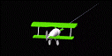

Moves the viewer through the scene like in an airplane
Interaction:
- Press button, keep button pressed, and
- move your hand starting at this point from or to your body in the direction you like,
- release button
The velocity is proportional to the distance between the position
where the button has been pressed and the current position
Scaling factor can be selected using SPEED
Shortcut for 3-button-device: middle button